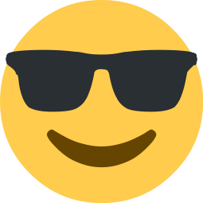

Floydverse
A collection of games, software and large scale multimedia works all based around a bizzare alternate reality plotline.
Explore Github
Creates software
My goal is to create exceptional open-source software that's accessible, fun, and most importantly, great. That's why when I build software, I build it on the pillars of one of the following values
I have a wide range of skills and experience in software development, stemming from years of hobby coding and current studies in undergraduate bachelors computer science, giving me a strong foundation in:
A collection of games, software and large scale multimedia works all based around a bizzare alternate reality plotline.
Explore GithubAn open source poetry creation platform, where anyone can contribute, share and curate poetic works.
Explore GitHubAn open source poetry creation platform, where anyone can contribute, share and curate poetic works.
Explore GitHubA high intensity massively multiplayer sandbox survival game.
GitHubAn open source poetry creation platform, where anyone can contribute, share and curate poetic works.
Explore GithubAn online multiplayer canvas where collaboration meets chaos - create art or start digital wars one pixel at a time
Play Now GithubPlay Now Github
A high intensity massively multiplayer sandbox survival game.
Play Now GithubA simple JavaScript library providing an asynchronous method call interface for Workers, Iframes and cross-window contexts.
Learn MoreA super simple, easy, and modern C binary serialisation/deserialisation library.
Learn MoreWant to see more? Find my projects, experiments and forks all on GitHub.
Profile